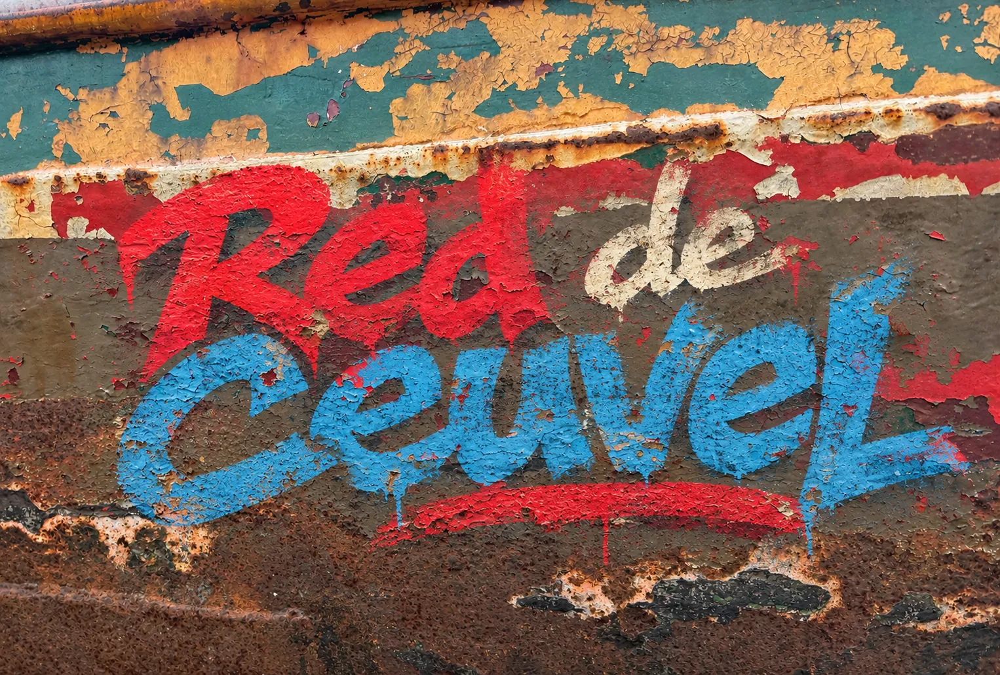
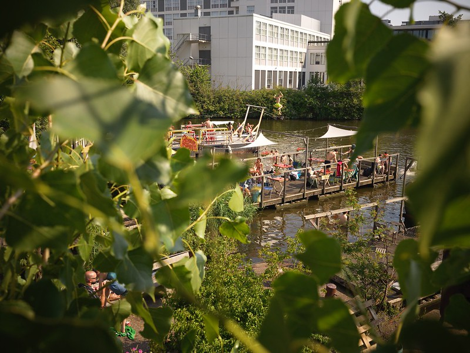

Red de Ceuvel

Niet slopenLaten groeienEen unieke plek slopen of samen de stad maken?
De Ceuvel is een levende proeftuin in Amsterdam-Noord. Op vervuilde grond groeide een plek waar duurzaamheid, ondernemerschap en gemeenschap hand in hand gaan. Alles slopen is onnodig: het bestemmingsplan kan gerealiseerd worden zonder vanaf nul te beginnen. Behoud wat waardevol is en versterk wat er al is.

Wil je meer doen?
Word ambassadeur en deel wat De Ceuvel voor jou betekent.